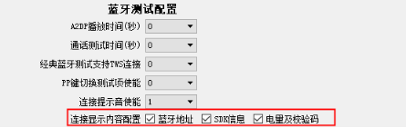
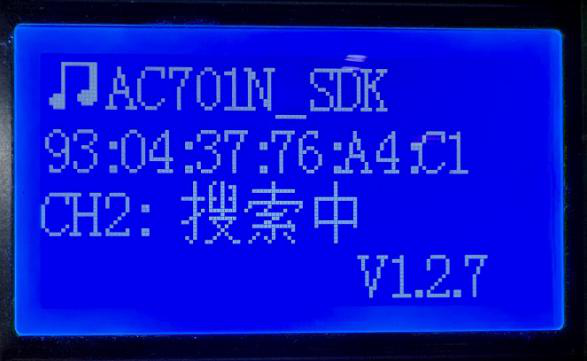
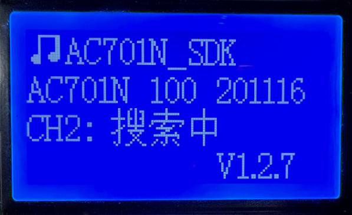
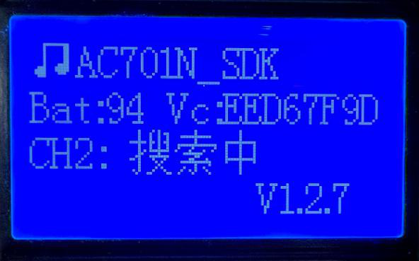

3.11. Viewing Bluetooth Device Information (SDK Version/Battery Level/Checksum)
3.11.1. Feature overview
To help the production line quickly check information such as the firmware version of the current Bluetooth device, the test box provides a Bluetooth device information view mode.
Supports displaying multiple items of information: Bluetooth address, SDK version, battery level and checksum
Supports cycling through multiple items of information on the display
Supports viewing over a wired or wireless connection
3.11.2. Operation
Test box PC tool settings
[1] Connect the test box to the PC and press and hold the rightmost button on the test box to enter PC configuration mode; the test box shows "LOADING";

[2] On the "Function settings" (功能设置) page of the PC tool, under "Bluetooth test configuration" (蓝牙测试配置), go to "Connection display content configuration" (连接显示内容配置) and check the content to be displayed.

Scenario 1: to view over a wireless connection, set the fixed device name for the connection

Scenario 2: to view over a wired connection, set the "Test enable" (测试使能) switch of UART mode

[3] Click "Save settings to test box" (保存设置到测试盒);
Test box DIP switch settings
To view the current Bluetooth frequency offset, turn on DIP switch 4 to enable the Bluetooth frequency offset test function.
Procedure
Scenario 1: viewing over a wireless connection
[1] Power on the device under test, place it near the test box and wait for the test box to connect.
[2] Once the test box is connected, it displays the corresponding device information; when there are several items to display, it cycles through them.
Scenario 2: viewing over a wired connection
[1] Place the device under test in the test box's UART fixture (see "Connecting the Test Box to a Fixture over UART") and wait for the test box to connect.
[2] Once the test box is connected, it displays the corresponding device information; when there are several items to display, it cycles through them.


